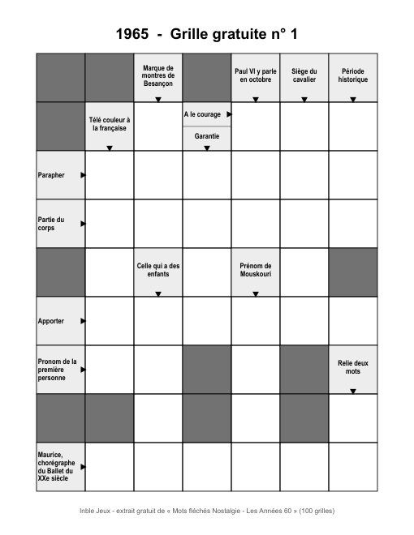

Mots fléchés années 60 à imprimer : 2 grilles nostalgie gratuites
Deux grilles de mots fléchés qui font revivre les années 60 : une grille de 1965 et une grille de 1968, avec des définitions sur les chanteurs, les films, les inventions et l’actualité de chaque année. En bonus, la page « Souvenirs de 1965 » et les solutions. Gros caractères, cases de 2,5 cm, sans inscription.
Télécharger le PDF (4 pages)
Télécharger les 2 grilles années 60 (PDF)Format 21,6 × 27,9 cm (Letter). Sur du papier A4, choisissez « ajuster à la page » : la grille reste bien lisible.

Ce qu’il y a dedans
- Grille 1965 et grille 1968 : des mots de tous les jours et des clins d’œil à l’époque, avec l’année dans la définition quand il faut s’en souvenir.
- Une page « Souvenirs de 1965 » : la minijupe de Courrèges, le tunnel du Mont-Blanc, Mireille Mathieu au « Jeu de la chance », le premier satellite français…
- Les solutions des deux grilles en dernière page.
Idéal pour un parent ou un grand-parent qui aime les mots fléchés, pour un atelier mémoire ou un après-midi en maison de retraite.
Comment jouer
- Chaque case grise claire contient une définition ; la flèche indique où écrire la réponse (à droite ou vers le bas).
- Une lettre par case, en majuscules et sans accent (É s’écrit E, Ç s’écrit C).
- Les mots se croisent : une lettre trouvée dans un sens aide dans l’autre. Les cases foncées restent vides.
Envie de toute la décennie ?
Ces deux grilles sont extraites du livre « Mots fléchés Nostalgie – Les Années 60, année par année » (100 grilles de 1960 à 1969, 10 pages de souvenirs, solutions), publié par Inble Jeux. Le lien vers le livre sera ajouté ici dès que sa page Amazon sera en ligne.
Fabrique tes propres grilles : générateur de mots fléchés gratuit · mots fléchés personnalisés (anniversaire, mariage, prénoms).
Autres grilles gratuites :années 70 · années 80 · mots fléchés gros caractères à imprimer.